练习① プロジェクト（WBS）与受注
.png 放进 assets/gui/ 后执行 python3 tools/swap_gui_images.py <site> --apply 即可一键替换。.1 是請求要素、.2 是製造（勘定設定要素）、評価付プロジェクト在庫 ON、受注明細に WBS が入り、請求计划 30%/70% 已登记。预计 90 分钟。WBS 3 件・請求要素
活動 0010/0020
原価・収益
WBS 予算
明細に WBS
30% / 70%
1-1 プロジェクトと WBS の作成（CJ20N）
输入值
プロファイル : 練習用プロファイル（例 ZETO01。C5 で決めたもの） プロジェクト定義ID : ZETO-1000（コーディングマスクに従う。自動作成でも可） 説明 : 特注装置 ETO 練習プロジェクト 開始日 / 終了日 : 今日 / 今日 + 180 日 プロジェクト在庫 : 評価付プロジェクト在庫 = ON ← これを忘れると金額が付かない WBS 1 ZETO-1000.1 : 「設計・調達」 → 請求要素（請求の宛先） WBS 2 ZETO-1000.2 : 「製造」 → 勘定設定要素（指図・発注・在庫の行き先） WBS 3 ZETO-1000.3 : 「据付・試運転」→ 勘定設定要素
CJ20N→ 「作成」→ プロファイルを選択（例ZETO01）→ プロジェクト定義に ID・説明・開始/終了日を入力。- プロジェクト定義の「プロジェクト在庫」欄で「評価付プロジェクト在庫」にチェックを入れる（項目名はバージョンで多少異なる。F1 で確認）。
- WBS 要素を 3 件作成（階層はプロジェクト直下）。各 WBS で：
・一般データ：説明、責任者（任意）、日付
・基本データ/勘定設定：.1に請求要素フラグ、.2/.3に勘定設定要素（構造要素ではない）
・予算/計画の設定は既定のままで可 - 「保存」→ 記録：プロジェクト定義 ID と WBS ID（例
ZETO-1000.1）。 - 確認：
CJ20Nで開き直し、またはCJ03（プロジェクト照会）でWBS 階層・請求要素・勘定設定・評価付在庫を読み取る。
② 「請求要素」は1 つの WBS にだけ立てる（受注明細がそこを指す）。
③ 製造に使う WBS は勘定設定要素であること（構造要素だけでは指図/発注をぶら下げられない）。
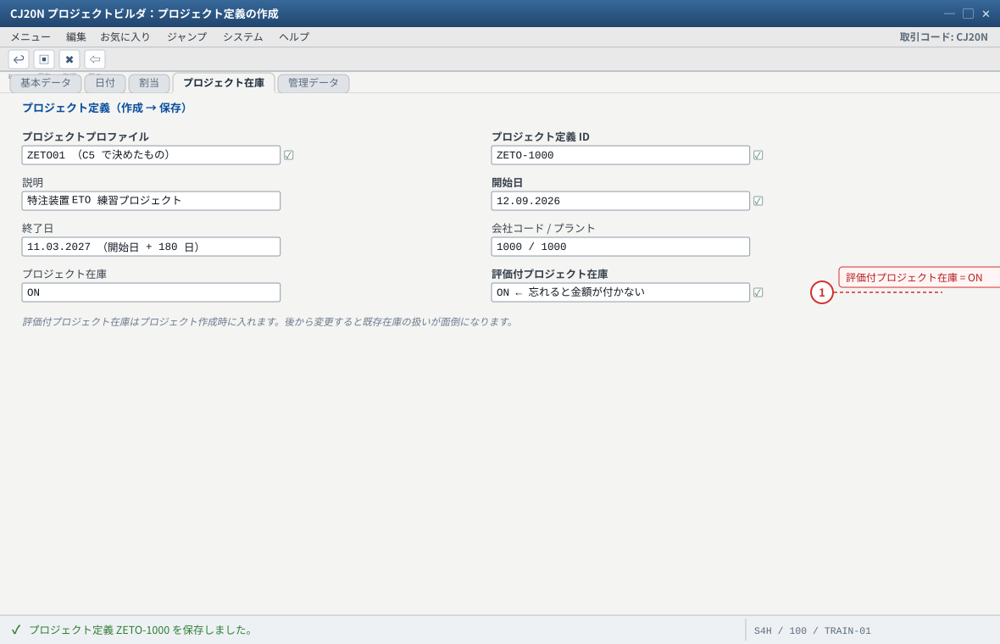
- 1 ETO の出発点。数量だけでなく金額を持つ在庫（Q）にするためのフラグ
自システムでの確認：WBS の ID はコーディングマスク＋番号で決まります（例 ZETO-1000.1）。採番された ID を必ず記録してください。
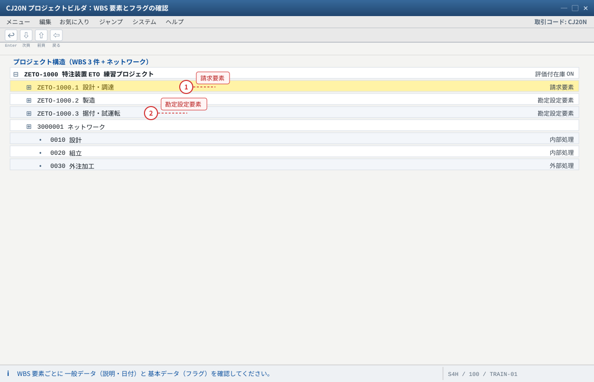
- 1 請求要素は 1 つの WBS にだけ立てる。受注明細はここを指す（収益の宛先）
- 2 製造に使う WBS は勘定設定要素であること（構造要素だけでは指図/発注をぶら下げられない）
自システムでの確認：WBS 詳細に「請求要素」が見えない場合は項目選択の設定（プロファイルまたは SM30: V_TCJ1）を疑います。
1-2 ネットワークと活動の作成（CN21 / CJ20N）
ネットワーク : 3000001（番号範囲の自動採番でも可） 割当先 WBS : ZETO-1000.2（製造） 活動 0010 : 「設計」 ／作業区 ZETO_WC01／内部処理（制御キー：内部処理） 活動 0020 : 「組立」 ／作業区 ZETO_WC01／内部処理＋確認（CN25 で実績） 活動 0030 : 「外注加工」／外部処理（購買依頼が出る）※発展課題
CN21→ ネットワークタイプ・プロファイルを選択 → 説明と WBS 割当（ZETO-1000.2）を入力。- 活動を 3 件入力（制御キーは標準の「内部処理」「外部処理」系）。作業区は
ZETO_WC01。 - 「日程計画」で基本日付を WBS の日付に合わせる → 保存 → ネットワーク番号を記録。
- 確認：
CN23（照会）で活動、作業区、日程が見えること。
CN25）による進捗の材料」です。時間が無い場合はこの 1-2 を飛ばして構いません（その場合 0020 相当の工数は製造指図側で扱う）。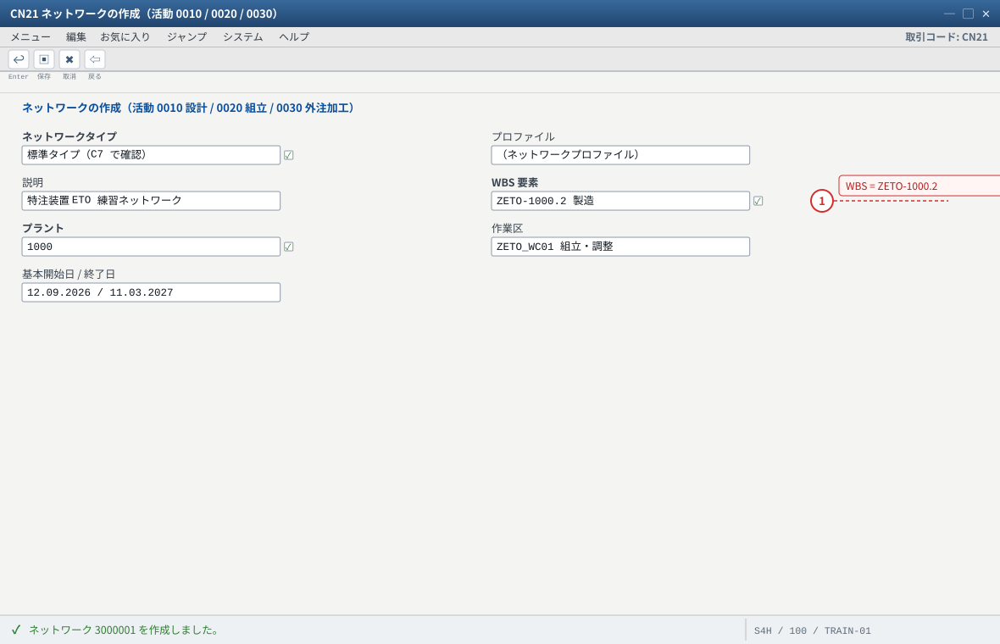
- 1 割当先は製造の勘定設定要素。ここが構造要素だと活動確認の原価が WBS に乗らない
ネットワークを省いても ETO は成立します（製造は製造指図で回せる）。ネットワークの価値は工程管理と活動確認（CN25）による進捗の材料です。
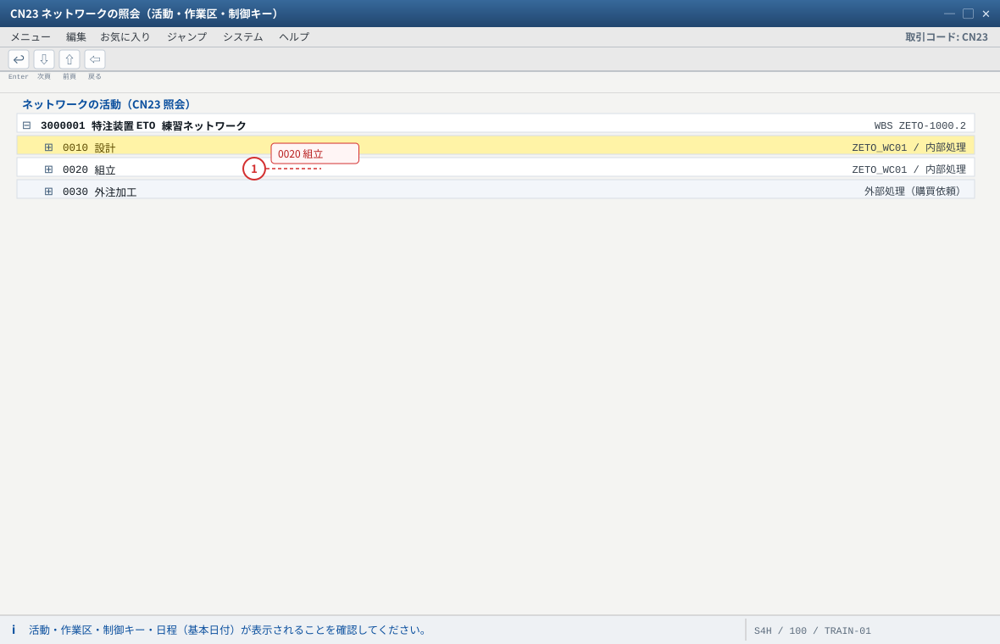
- 1 0020 組立は CN25 で活動確認（実作業時間）を計上する対象。進捗（CNE1）の材料になる
制御キーの名称は環境により異なります（標準の「内部処理」「外部処理」系）。0030（外部処理）は購買依頼が生まれる発展課題です。
1-3 原価・収益計画（CJ40 / CJ42）
CJ42（計画収益）: WBS 1（.1 請求要素）に計画収益 5,000,000 JPY
CJ40（計画原価）: WBS 2（.2 製造） に計画原価（例）
・材料費 1,200,000 JPY
・労務費 1,000,000 JPY
・外注費 800,000 JPY
・諸経費 200,000 JPY → 合計 3,200,000 JPY（粗利 1,800,000）
CJ42→ プロジェクト/WBS を指定 → 計画バージョン（通常0）→ 年度・金額を入力 → 保存。CJ40→ 同様に計画原価を入力（費目別に入れると後で予実分析が楽）。- 確認：
CJI4（計画のレポート）で WBS ごとの計画原価・収益が見える。これが後の「実績（CJI3）」と比較される基準。
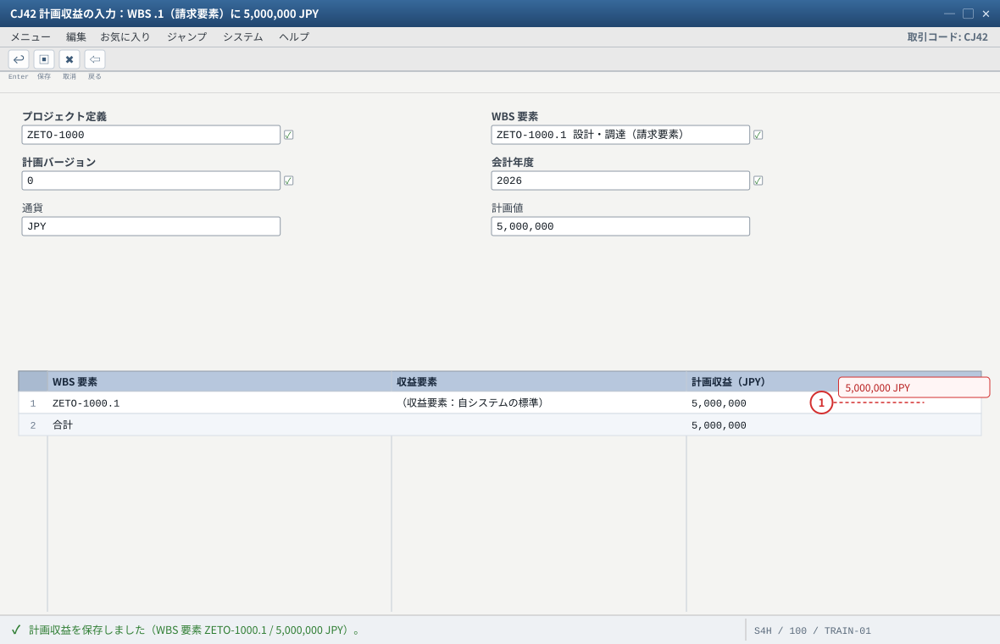
- 1 収益は請求要素（.1）に入れる。予実比較と POC（進捗）の分母になる
自システムでの確認：収益要素（原価要素の収益カテゴリ）が無いと計画収益を入力できません。計画バージョンは通常 0 です。
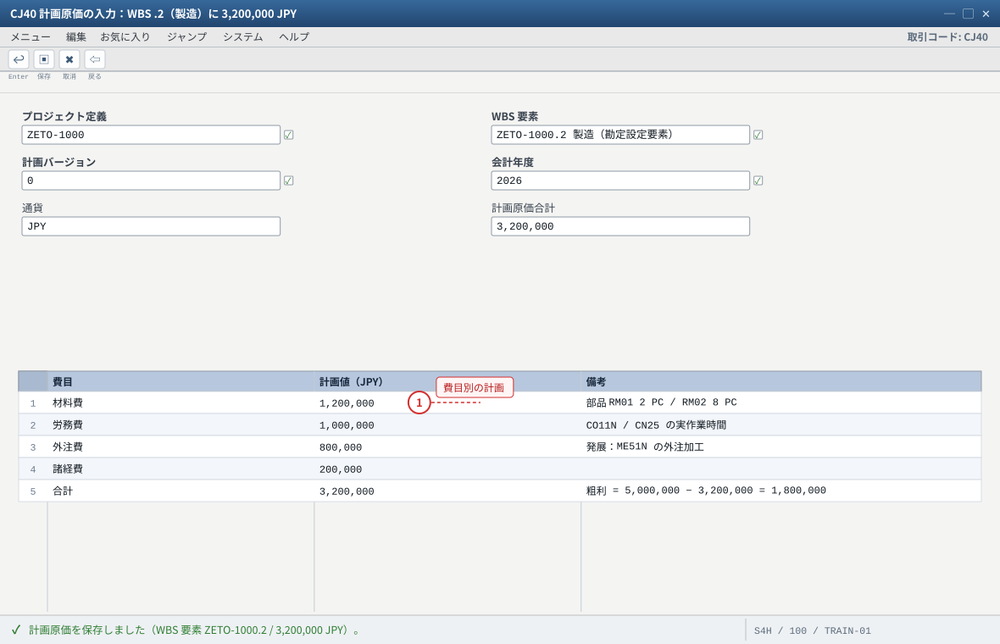
- 1 費目別に入れておくと、後の CJI3（実績）との予実分析が楽になる
計画を入れないと実績が出ないわけではありません。計画は予実比較と収益認識（POC の分母）のために入れます。確認は CJI4（計画レポート）です。
1-4 予算の投入と解放（CJ30 / CJ32）
CJ30（元予算の変更）→ プロジェクト指定 → WBS.1に 5,000,000 JPY、WBS.2に 3,200,000 JPY を投入（練習用の概算）→ 保存。CJ32（予算の解放）で実行可能にする。解放されていないと発注・指図がブロックされることがある。- 確認：
CJ31（元予算の照会）で 予算・解放額・使用額（実績＋コミット）を確認。
CJBV で可用性管理を活性化しておくと、予算を超えそうな発注・指図で警告/エラーが出ます（练习⑤ で体験）。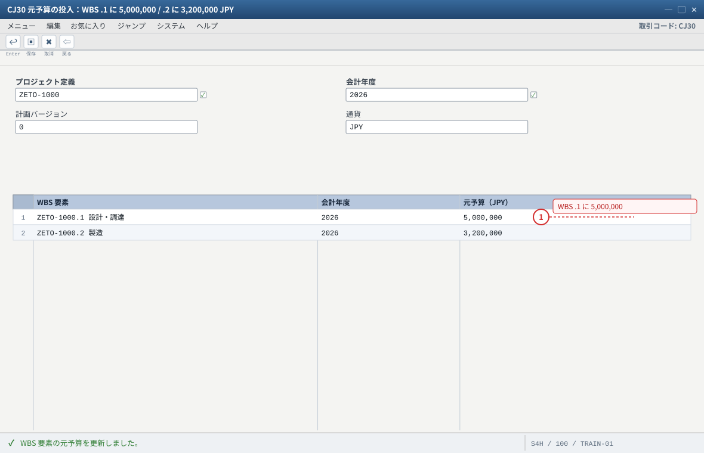
- 1 予算は計画（収益 5,000,000 / 原価 3,200,000）に合わせておくと予実が読みやすい
自システムでの確認：予算プロファイルが未割当だと予算機能そのものが使えません（C5 を確認）。
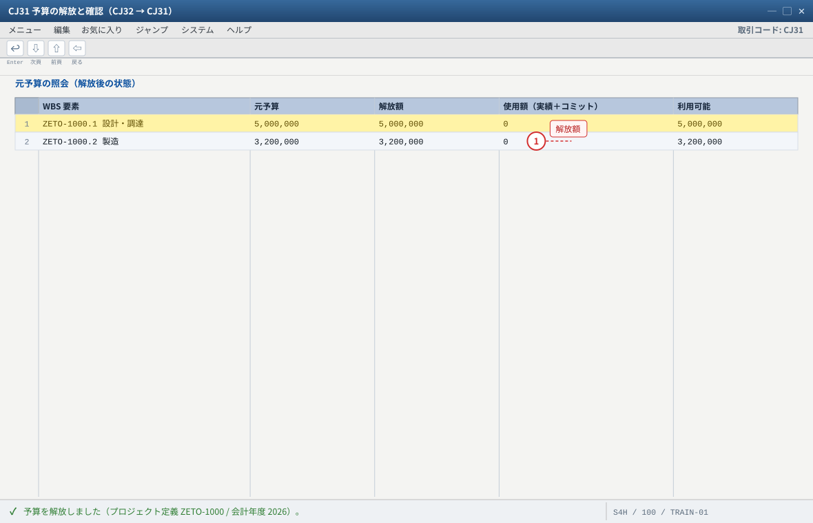
- 1 解放額が 0 のままだと未解放。発注・指図がブロックされることがある
CJBV で可用性管理を活性化しておくと、予算を超えそうな発注・指図で警告/エラーが出ます（練習⑤ の発展 3）。
1-5 受注の登録と WBS の割当（VA01）——E と Q の分かれ目
输入值
| 项目 | 值 | 说明 |
|---|---|---|
| 販売伝票タイプ / 販売エリア | OR / 1000-10-00 | 標準受注 |
| 得意先 / 購買発注番号 | 1000 / PO-ETO-0001 | 客户单号 |
| 受注日 / 希望納期 | 今日 / 今日 + 180 日 | 与 WBS 的结束日一致にしておくと後が楽 |
| 明細 10：品目 / 数量 / プラント | ZETO-FG01 / 1 PC / 1000 | 個別所要量品目 |
| 明細 10：単価 | 5,000,000 JPY | 条件 PR00（C4）から自動決定 |
| 明細 10：WBS 要素 | ZETO-1000.1（請求要素） | ここが ETO の肝 |
VA01→ 伝票タイプOR、販売エリア 1000/10/00、得意先1000、受注日と希望納期（+180 日）を入力。- 明細：品目
ZETO-FG01、数量1、プラント1000、納入日付 = 希望納期。 - 明細詳細（または明細の項目表示）で 「WBS 要素」项目に
ZETO-1000.1を入力する。
※ 項目が出ない/入力できない場合は C10 の実測手顺へ（明細カテゴリが WBS 割当を許していない）。 - 確認：明細カテゴリ（標準は
TAN、または WBS 用に用意した明細カテゴリ）、所要量タイプ（Q 系。Cloud はE21）、合計金額 5,000,000 JPY。 - 「保存」→ 受注番号を記録。
KE など）になっていたら、品目マスタ MRP3 の戦略グループ（C2）を確認してください。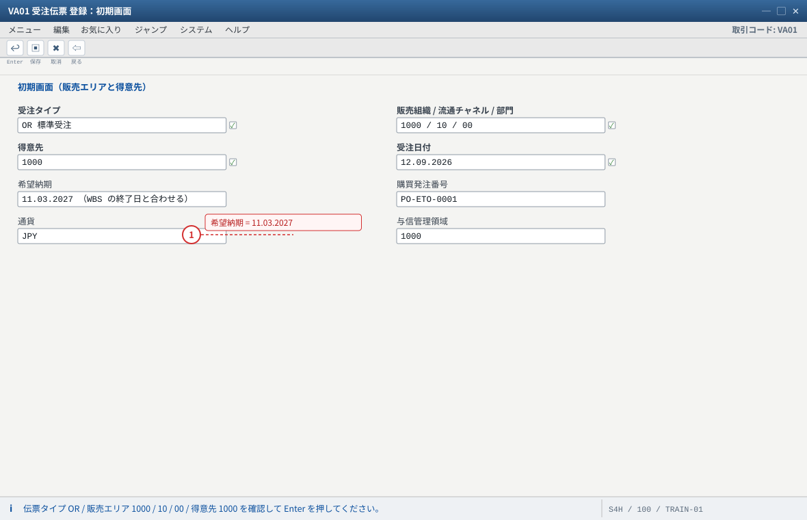
- 1 希望納期を WBS の終了日と合わせておくと、後の日程・請求計画が楽になる
自システムでの確認：受注タイプ OR の標準でも、品目側（MRP3 戦略グループ・MRP4 個別所要量）と WBS 割当で需要の行き先が決まります。
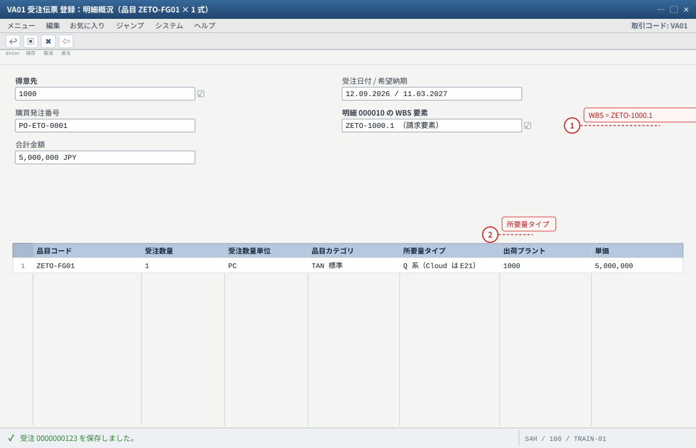
- 1 WBS 要素に ZETO-1000.1（請求要素）を入れる＝ETO の肝。ここが空だと Q にならない
- 2 所要量タイプが Q 系なら需要はプロジェクト在庫として流れる。KE 等なら MRP3 の戦略グループを疑う
自システムでの確認：明細カテゴリ（標準は TAN）と所要量タイプの値は環境ごとに異なります。VA03 の明細で実測して記録してください。
1-6 明細・請求計画の確認と登録（VA03 / VA02）
VA03→ 受注番号 → 明細 10 → 明細詳細：明細カテゴリ / WBS 要素 / 所要量タイプ / プラント を記録。- 納入日程行：納期行カテゴリと確認済納入日付を確認。
VA02（変更モード）→ 明細 → メニュー「明細」→「請求計画」→ 2 行登録：
・1 行目：契約締結時（今日） 30% = 1,500,000 JPY
・2 行目：完成・検収時（+180 日）70% = 3,500,000 JPY- 保存 →
VA03で請求計画を再表示して確認。
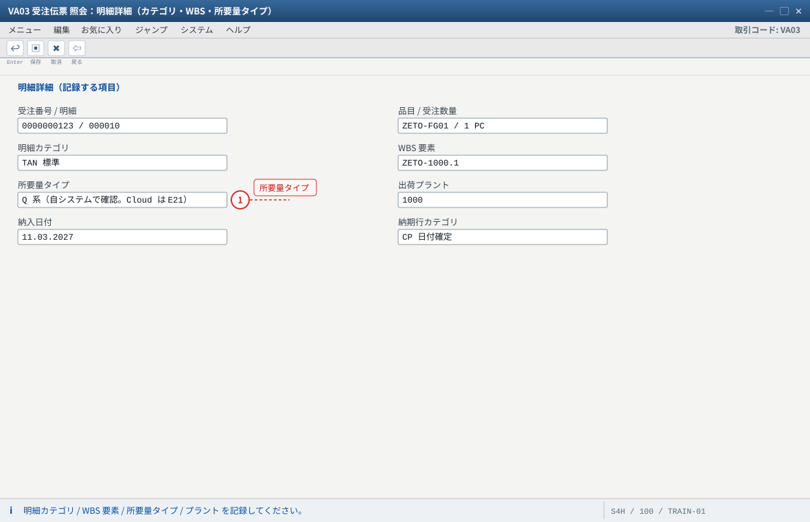
- 1 所要量タイプが Q 系であることを実測で確認する（ここが E と Q の分かれ目）
自システムでの確認：納期行カテゴリ・所要量タイプの値は環境ごとに異なります。OVZG（所要量クラス）の評価区分と突き合わせて判定してください。
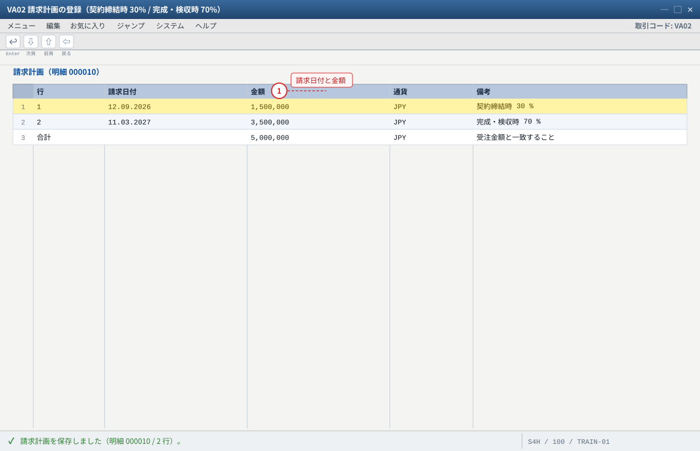
- 1 ETO は長期案件。請求計画が「いつ請求できるか」の一覧になる。ここに無い日付では請求できない
自システムでの確認：請求計画を保存できない場合は明細カテゴリの請求関連（VOV7）と金額 0 を疑います。練習④ の請求日付は必ずこの行に合わせてください。
期待结果汇总（本练习做完）
| # | 确认项目 | 期待值 | 确认方法 |
|---|---|---|---|
| 1 | プロジェクト定義 / WBS | ZETO-1000 + .1/.2/.3、.1 が請求要素 | CJ20N/CJ03 |
| 2 | 評価付プロジェクト在庫 | ON | CJ20N プロジェクト定義 |
| 3 | ネットワーク / 活動 | 3000001、活動 0010/0020（+0030） | CN23 |
| 4 | 計画原価・計画収益 | WBS .2 に 3,200,000 / WBS .1 に 5,000,000 | CJI4 |
| 5 | 予算 | 元予算投入＋解放（CJ31 で確認） | CJ30/CJ32/CJ31 |
| 6 | 受注明細の WBS 要素 | ZETO-1000.1 | VA03 明細詳細 |
| 7 | 所要量タイプ | Q 系（Cloud は E21） | VA03 納入日程行／OVZG |
| 8 | 請求計画 | 30%（1,500,000）＋70%（3,500,000） | VA03 請求計画 |
つまずきと対処（本练习版）
| 症状 | 最可能的根因 | 确认 / 対処 |
|---|---|---|
| CJ20N でプロファイルが選択できない / 採番エラー | プロファイル未割当・番号範囲切れ・権限 | OPSA の番号範囲、CJ20N のプロファイル、権限を確認 |
| WBS に「請求要素」項目が無い/入力できない | WBS のタイプ（構造要素）や項目選択の設定 | CJ20N の WBS 詳細 → 項目表示設定。プロジェクトプロファイルの WBS 項目選択も確認 |
| 受注明細に WBS を入れられない | 明細カテゴリが WBS 割当を許していない | C10：VOV7 で明細カテゴリを確認し、必要なら ZETO 明細カテゴリを作成 |
| WBS を入れたら「勘定設定エラー」 | 指定した WBS が勘定設定要素でない / ロック・クローズ済 | WBS のフラグとステータスを CJ20N で確認 |
所要量タイプが KE など MTO 用になる | 品目マスタ MRP3 の戦略グループが受注生産（E 系）のまま | MM02 MRP3 を ETO 用戦略グループ（例 E2）へ（C2） |
| 請求計画が保存できない | 明細カテゴリの請求関連（請求計画の許可）が無い / 金額 0 | VOV7 の請求関連項目と金額を確認 |
| 予算が投入できない（"not budgeted" 系） | 予算プロファイル未割当、年度・期間の不整合 | プロジェクトプロファイルの予算プロファイルを確認（C5）。必要に応じ「Budgeted ステータスのリセット」系の機能を確認 |
验收（完成基准）
CJ20Nでプロジェクト（ZETO-1000）と WBS 3 件を作成し、評価付プロジェクト在庫 ON を確認した。- WBS
.1が請求要素、.2が勘定設定要素であることを説明できる。 CN21/CN23でネットワークと活動（0010/0020）を作成・確認した（または省略した理由を説明できる）。CJ40/CJ42で計画原価・計画収益を入力し、CJI4で確認した。CJ30→CJ32で予算投入と解放を行い、CJ31で確認した。- 受注明細に WBS
ZETO-1000.1を入れ、請求計画 30%/70% を登録した。 - 所要量タイプが Q 系であることを自分のシステムで実測して記録した。
VA11→VA21）にプロジェクトを絡める（見積段階で WBS を割当て、受注コピーで引継ぐ）。② 標準構造/標準ネットワークを使い、似た案件を再利用してプロジェクト作成を短縮する（コピー機能
CJ20N の「構造コピー」）。③ 「受注保存時にプロジェクトを自動生成」したい場合の実装パターンを調べる（標準では不可。BAdI/連携が必要）。